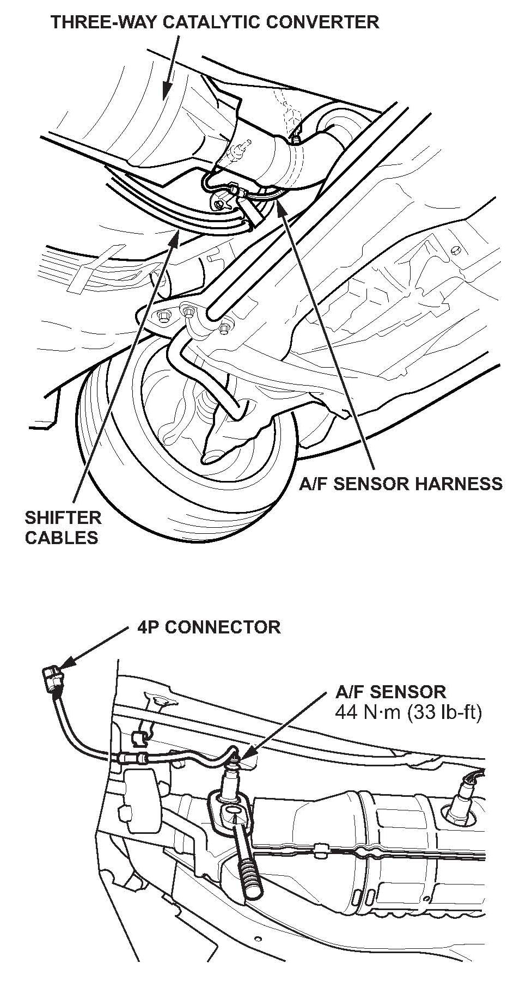
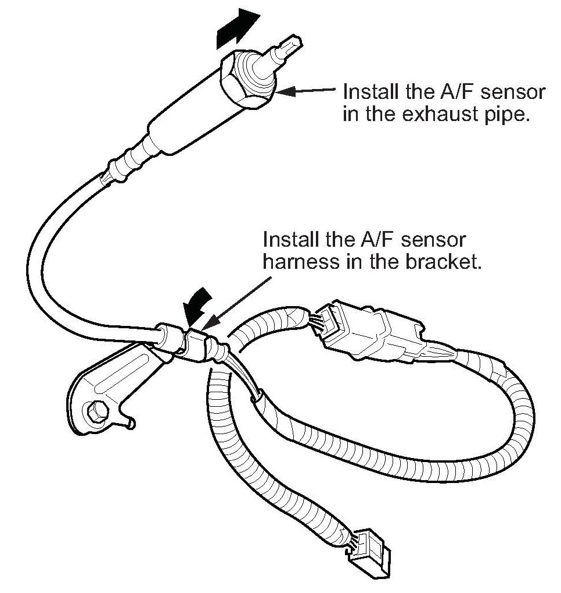
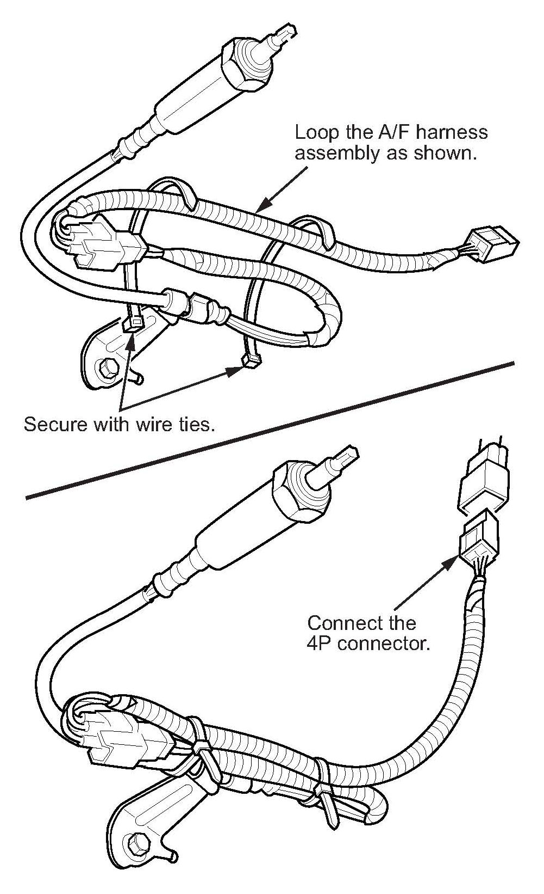

Engine Controls - MIL ON/DTC's P0134/P0135/P0171/P1157
10-062November 19, 2010
Applies To:
2006-08 Civic Si - ALL
2006-08 Civic Si: MIL Comes On With DTC P0134, P0135, P0171, or P1157
SYMPTOM
The MIL comes on with one of these DTCs:
^ P0134 (air fuel ratio [A/F] sensor [sensor 1] heater system malfunction)
^ P0135 (air fuel ratio [A/F] sensor [sensor 1] heater circuit malfunction)
^ P0171 (fuel system too lean)
^ P1157 (air fuel ratio [A/F] sensor [sensor 1] AFS circuit high voltage)
PROBABLE CAUSE
Under-hood temperature causes grease from an under-hood fuse box connector to melt, travel down through the engine wire harness, and drip onto the A/F sensor 4P connector.
CORRECTIVE ACTION
Replace the A/F sensor, and install a subharness kit.
PARTS INFORMATION
A/F Sensor:
P/N 36531-RRA-013
Subharness Kit (includes subharness and wire ties):
P/N 06320-SNA-315
WARRANTY CLAIM INFORMATION
The normal warranty applies.
Operation Number: 1201F5
Flat Rate Time: 0.3 hour
Failed Part: P/N 36531-RRA-003
Defect Code: 03214
Symptom Code: 03203
Skill Level: Repair Technician
REPAIR PROCEDURE
1. Raise the vehicle on a lift, and make sure it's securely supported.
2. Remove the A/F sensor:
^ Disconnect the 4P connector.
^ Remove the sensor with an 02 sensor wrench (Snap-on S3176, or equivalent). The sensor will not be reused.

^ Remove the A/F sensor harness from its bracket.

3. Install a new A/F sensor, and torque it to 44 N.m (33 lb-ft). Do not connect the sensor's 4P connector yet.
4. Connect the A/F sensor 4P connector to the connector on the end of the new subharness. Install the A/F sensor harness in the bracket.

5. Fasten the new subharness to the A/F sensor harness with wire-ties as shown. The loop in the subharness prevents grease from getting into the A/F sensor connector. Connect the subharness 4P connector to the engine harness.

Disclaimer